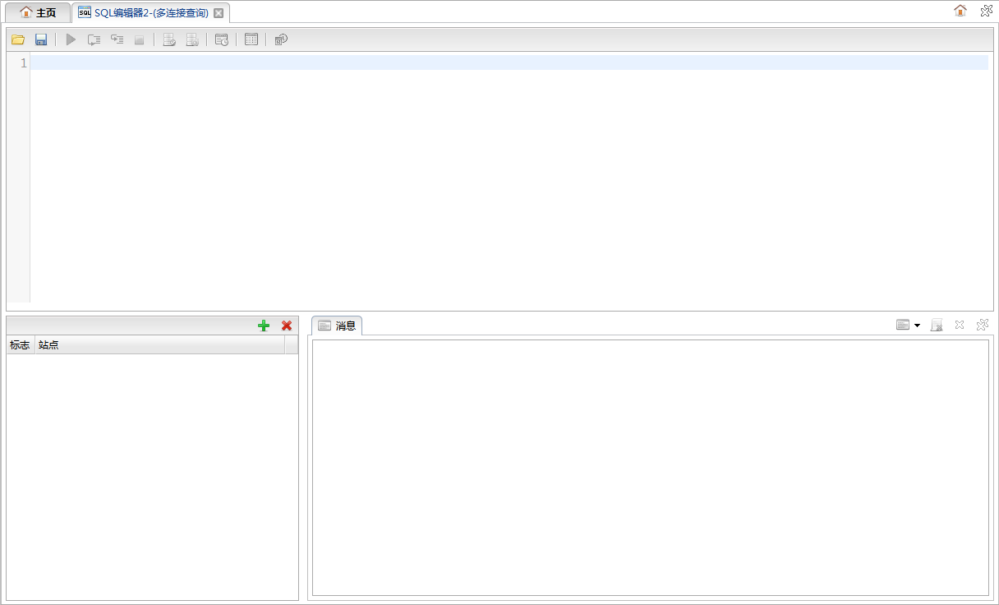
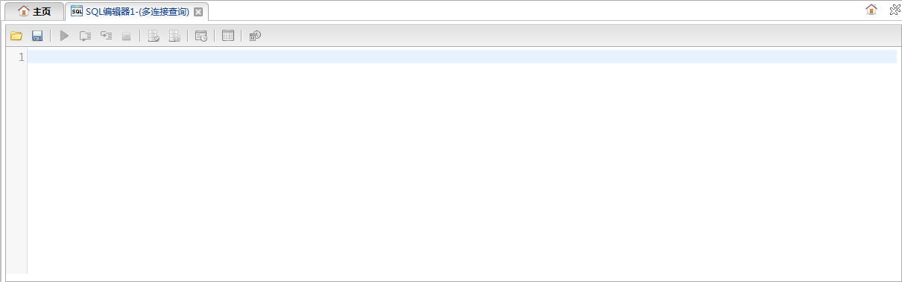
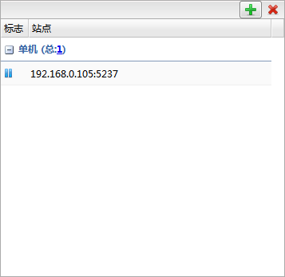
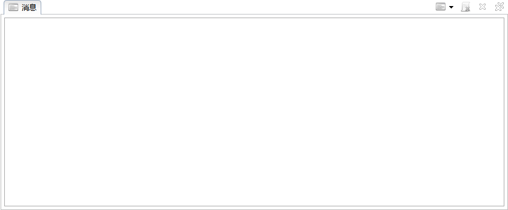

添加
添加 删除
删除多连接查询面板与SQL查询面板相似，在SQL查询面板基础上增加了多连接查询模板和数据库连接管理的相关功能。如下图所示:

多连接查询面板主要由以下几个部分组成。
查询面板包括功能按钮和输入面板，如下图所示:

功能按钮列表| 按钮 | 说明 |
|---|---|
| 打开 | 打开多连接查询模板对话框。 |
| 保存 | 保存当前模板。如果保存新创建模板，将弹出新建SQL模板对话框。 |
| 其他 | 请参考SQL查询面板 |
数据库连接面板管理查询所需要的数据库连接，如下图所示:

功能按钮列表| 按钮 | 说明 |
|---|---|
| 添加 |
打开资源选择对话框，选择数据库连接。 |
| 删除 |
删除选中的数据库连接。 |
请参照SQL查询面板，如下图所示:
